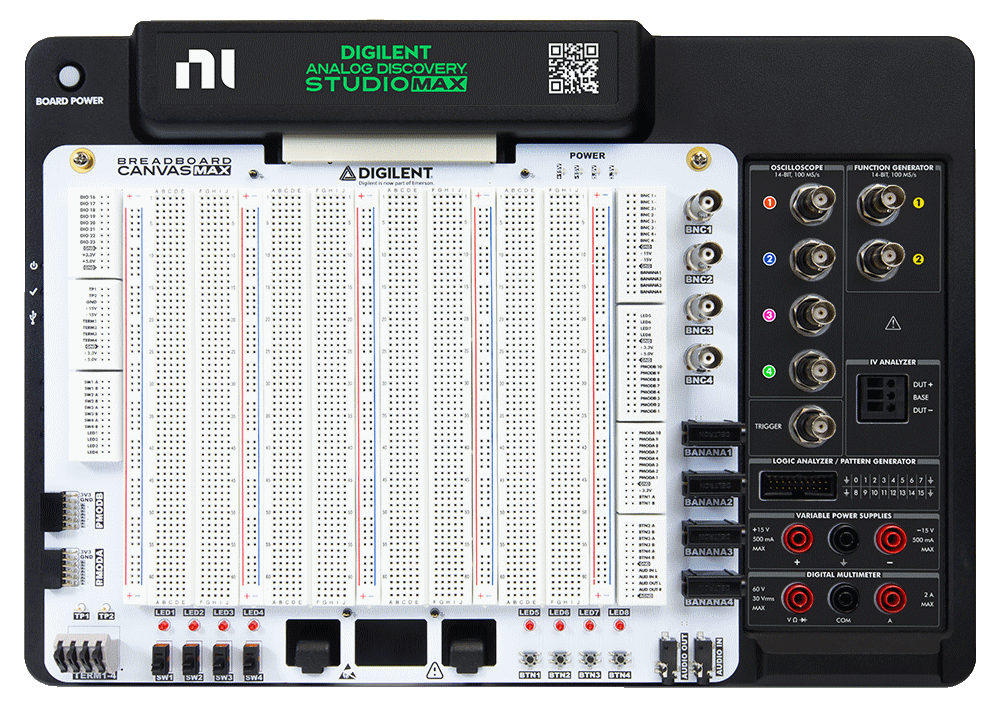

To set up the Analog Discovery Studio Max:

| Recommended operating conditions | Absolute maximum ratings | ||
|---|---|---|---|
| Oscilloscope | inputs | ±50 V 1 MΩ | 15 pF | ±50 V |
| Wavegen | outputs | ±10 V 50Ω 30 mA DC | ±5.8 V |
| Digital | IOs | 0 V / 3.3 V 8 mA | ±15 V |
| Trigger | IO | 0 V / 3.3 V 8 mA | ±15 V |
| Positive Supply | output | 1 V 15 V 500 mA | |
| Negative Supply | output | -1 V -15 V 500 mA | |
| PCI Supplies | output | 3.3 V, 5 V, +15 V, -15 V | |
| Device Supply | input | 19 V DC 4.74 A | 90 W 18.2 V .. 19.8 V |
For more information visit the Resource Center.
See Installer Details for information about different command line options to install WaveForms.
See WaveForms for more information on using the WaveForms software.
If the device is not detected by WaveForms application or experience random disconnects usually indicates contact problem. In this case, try using the original USB cable the device or other USB cables you have at hand, try using other USB port and hub. Make sure the 19V DC supply is plugged in properly.
The Analog Discovery Studio Max has 4 oscilloscope input channels.
Specifications:
| Low Range | High Range | |
| Range | <= 200 mV/div | > 200 mV/div |
| Peak to peak | 2 V | 50 V |
| Resolution | ~130 uV | ~3.3 mV |
| Input voltage | ±2 V | ±50 V |
| Offset | ±1 V | ±25 V |
The coupling and other options can be selected under channel options in Scope, Spectrum, Network and Impedance Analyzers.
The Analog Discovery Studio Max is equipped with two Arbitrary Waveform Generators channels.
Specifications:
| Low Range | High Range | |
| Amplitude | <= 2.5 V | > 2.5 V |
| Peak to peak | 2 V | 10 V |
| Resolution | ~0.32 mV | ~1.3 mV |
| Offset | ±10 V | ±10 V |
The Analog Discovery Studio Max has 24 digital I/Os (DIO 0-23).
Specifications:
The Analog Discovery Studio Max has two variable power supplies.
Specifications:
| Output Voltage | +1 V to +15 V | -1 V to -15 V |
| Current Limit | 20 mA to 500 mA | -20 mA to -500 mA |
| Voltage Accuracy | 100 mV | 100 mV |
| Ripple and Noise | 20 mV pk2pk | 20 mV pk2pk |
| Voltage Readback Accuracy | ±15 mV | ±15 mV |
| Current Readback Accuracy | ±5 mV | ±5 mV |
These power supplies can be used as slow AWG channels, see Wavegen channel 3 and 4.
Soft start is adjustable as full scale time between 1ms and 84.5ms, default is 66ms.
The supply rails on the PCI connector are:
| Output Voltage | 3.3 V | 5 V | +15 V | -15 V |
| Accuracy | ±5 % | ±5 % | ±5 % | ±5 % |
| Current Output | 310 mA | 2 A | 500 mA | 500 mA |
For more information visit the Resource Center.
The Analog Discovery Studio Max has a DMM with AC or DC voltage or current, resistance, voltage drop across diode, continuity.
Specifications:
| Resolution | 4.5 digits |
| Input impedance | 10 MΩ |
| Voltage input protection | ±60 V |
| Current input protection | 4.5 A fuse, 5MF 3.5-R |
| Voltage measurement | |
|---|---|
| DC ranges | 50 mV, 500 mV, 5 V, 50 V DC |
| AC ranges | 50 mV, 500 mV, 5 V, 30 V RMS |
| AC input frequency range | 40 Hz to 8 kHz |
| Accuracy | 0.2% of 50 mV range and 0.1% at other ranges* |
| Current measurement | |
| Range | 2 A DC/RMS |
| Shunt resistance | 20 mΩ |
| AC input frequency range | 40 Hz to 8 kHz |
| Accuracy | 0.1% or range* |
| Resistance measurement | |
| Ranges | 50 Ω, 500 Ω, 5 kΩ, 50 kΩ, 500 kΩ, 5 MΩ, 50 MΩ |
| Accuracy | 1% of 50 Ω and 50 MΩ ranges, 0.1% of other ranges |
* at 50 Hz for AC
For more information visit the Resource Center.